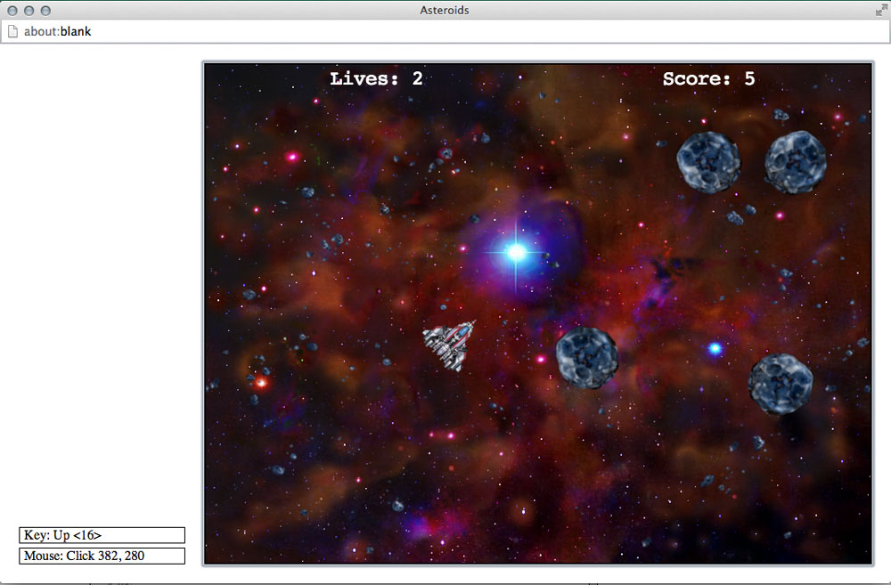

This is a practice project the class I was taking did, it uses a gui module called simplegui, which works inside the web app that was set up for the class, Codeskulptor. I'm looking to translate the simplegui methods into tkinter ones, so that it can be played on a desktop. The interface only works inside the codeskulptur app, though the logic would be the same. To play it, click the link below and press the 'run' button in the upper left. Works best in Chrome. Probably wouldn't work on mobile. Play Asteroids!
If the above button gives an error, "unable to load "#user*", then copy/paste the below code into the editing area. Or open the link with Chrome. Adblock plus and httpseverywhere addons for Firefox cause the error.
This was fun, its not complete, it still spawns rocks on top of the ship, I want to fix that, and maybe add in the optional explosions I have sprites for, but other than that, it plays an awful lot like the original game. Art was provided to me. Arrow keys control ship, and spacebar shoots (holding down does not continuously shoot).
The full implementation:
import simplegui
import math
import random
# globals for user interface
WIDTH = 800
HEIGHT = 600
score = 0
lives = 3
time = 0.5
started = False
class ImageInfo:
#self, center ofimage-list, size-same, radius of enclosing circle
def __init__(self, center, size, radius = 0, lifespan = None, animated = False):
self.center = center
self.size = size
self.radius = radius
if lifespan:
self.lifespan = lifespan
else:
self.lifespan = float('inf')
self.animated = animated
def get_center(self):
return self.center
def get_size(self):
return self.size
def get_radius(self):
return self.radius
def get_lifespan(self):
return self.lifespan
def get_animated(self):
return self.animated
# art assets created by Kim Lathrop, may be freely re-used in non-commercial projects, please credit Kim
# debris images - debris1_brown.png, debris2_brown.png, debris3_brown.png, debris4_brown.png
# debris1_blue.png, debris2_blue.png, debris3_blue.png, debris4_blue.png, debris_blend.png
debris_info = ImageInfo([320, 240], [640, 480])
debris_image = simplegui.load_image("http://commondatastorage.googleapis.com/codeskulptor-assets/lathrop/debris2_blue.png")
# nebula images - nebula_brown.png, nebula_blue.png
nebula_info = ImageInfo([400, 300], [800, 600])
nebula_image = simplegui.load_image("http://commondatastorage.googleapis.com/codeskulptor-assets/lathrop/nebula_brown.png")
# splash image
splash_info = ImageInfo([200, 150], [400, 300])
splash_image = simplegui.load_image("http://commondatastorage.googleapis.com/codeskulptor-assets/lathrop/splash.png")
# ship image
ship_info = ImageInfo([45, 45], [90, 90], 35)
ship_image = simplegui.load_image("http://commondatastorage.googleapis.com/codeskulptor-assets/lathrop/double_ship.png")
# missile image - shot1.png, shot2.png, shot3.png
missile_info = ImageInfo([5,5], [10, 10], 3, 50)
missile_image = simplegui.load_image("http://commondatastorage.googleapis.com/codeskulptor-assets/lathrop/shot1.png")
# asteroid images - asteroid_blue.png, asteroid_brown.png, asteroid_blend.png
asteroid_info = ImageInfo([45, 45], [90, 90], 40)
asteroid_image = simplegui.load_image("http://commondatastorage.googleapis.com/codeskulptor-assets/lathrop/asteroid_blue.png")
# animated explosion - explosion_orange.png, explosion_blue.png, explosion_blue2.png, explosion_alpha.png
explosion_info = ImageInfo([64, 64], [128, 128], 17, 24, True)
explosion_image = simplegui.load_image("http://commondatastorage.googleapis.com/codeskulptor-assets/lathrop/explosion_alpha.png")
# sound assets purchased from sounddogs.com, please do not redistribute
soundtrack = simplegui.load_sound("http://commondatastorage.googleapis.com/codeskulptor-assets/sounddogs/soundtrack.mp3")
missile_sound = simplegui.load_sound("http://commondatastorage.googleapis.com/codeskulptor-assets/sounddogs/missile.mp3")
missile_sound.set_volume(.5)
ship_thrust_sound = simplegui.load_sound("http://commondatastorage.googleapis.com/codeskulptor-assets/sounddogs/thrust.mp3")
explosion_sound = simplegui.load_sound("http://commondatastorage.googleapis.com/codeskulptor-assets/sounddogs/explosion.mp3")
# helper functions to handle transformations
def angle_to_vector(ang):
return [math.cos(ang), math.sin(ang)]
def dist(p,q):
return math.sqrt((p[0] - q[0]) ** 2+(p[1] - q[1]) ** 2)
#helper function to process sprite groups
def process_sprite_group(set_of_sprites, canvas):
for sprite in set_of_sprites:
sprite.draw(canvas)
sprite.update()
#checking age of sprite against lifespan
#making tempremoval set
#remove sprites that are too old
temp_sprite_set_remove = set([])
for i in set_of_sprites:
if i.update():
temp_sprite_set_remove.add(i)
set_of_sprites.difference_update(temp_sprite_set_remove)
def group_collide(group, other_object):
#group is a set of sprite objects, and
#other_object is the ship, or anything, really.
for i in set(group):
if i.collide(other_object):
group.remove(i)
return True
def group_group_collide(group1, group2):
global score, lives
numberofCollissions = set([])
#here, group 1 will be rocks
#group2 will be whats colliding with them, missiles
#deletes rocks
for i in group2:
if group_collide(group1, i):
numberofCollissions.add(i)
if lives > 0:
score += 1
group1.difference_update(numberofCollissions)
#deletes missiles
for i in group1:
if group_collide(group2, i):
numberofCollissions.add(i)
group2.difference_update(numberofCollissions)
# Ship class
class Ship:
def __init__(self, pos, vel, angle, image, info):
self.pos = [pos[0],pos[1]]
self.vel = [vel[0],vel[1]]
self.thrust = False
self.angle = angle
self.angle_vel = 0
self.image = image
self.image_center = info.get_center()
self.image_size = info.get_size()
self.radius = info.get_radius()
def draw(self,canvas):
#canvas.draw_circle(self.pos, self.radius, 1, "White", "White")
if self.thrust:
canvas.draw_image(self.image, [(self.image_center[0] + self.image_size[0]), self.image_center[1]],
self.image_size, self.pos,
self.image_size, self.angle)
ship_thrust_sound.play()
else:
canvas.draw_image(self.image, self.image_center,
self.image_size, self.pos,
self.image_size, self.angle)
ship_thrust_sound.pause()
ship_thrust_sound.rewind()
def update(self):
#these numbers are arbitrary, but the handling
#is nice
friction = .9
acceleration = .8
forward = angle_to_vector(self.angle)
self.angle += self.angle_vel
self.pos[0] += self.vel[0]
self.pos[1] += self.vel[1]
self.vel[0] *= friction
self.vel[1] *= friction
if self.thrust:
self.vel[0] += forward[0]*acceleration
self.vel[1] += forward[1]*acceleration
#wrap around the screen
#got to be a better way to write this
if self.pos[0] <= self.radius:
self.pos[0] = WIDTH - self.radius - 1
elif self.pos[0] >= WIDTH - self.radius - 1:
self.pos[0] = self.radius
elif self.pos[1] <= self.radius:
self.pos[1] = HEIGHT - self.radius - 1
elif self.pos[1] >= HEIGHT - self.radius - 1:
self.pos[1] = self.radius
#direction is 1 for right, -1 for left
#that .01 is arbitrary, i like that speed of rotation.
def increase_angle_vel(self, direction):
self.direction = direction
self.angle_vel = .1 * direction
def decrease_angle_vel(self):
#supposedly this would make the angular rotation ease
#to a stop, rather than being so jarring, but
#obviously something isnt connected properly.
#checking to see if angle_vel is positive(turning right).
if math.fabs(self.angle_vel) == self.angle_vel:
while self.angle_vel >= 0:
self.angle_vel -= .001
else:
while self.angle_vel <= 0:
self.angle_vel += .001
def shoot(self):
global missile_group
forward = angle_to_vector(self.angle)
missile_pos = [self.pos[0] + (forward[0] * self.radius), self.pos[1] + (forward[1] * self.radius)]
missile_vel = [(self.vel[0] + (6 * forward[0])), (self.vel[1] + (6 * forward[1]))]
missile_group.add(Sprite(missile_pos, missile_vel, self.angle, 0, missile_image, missile_info, missile_sound))
def change_pos(self):
pass
#did not even see this here, til i was almost done
#not sure what its for.
# Sprite class
class Sprite:
#self, posistion-list, vel-list, ang-radians-int, ang_vel-int
# image-variable defined previously, info-the info object for it,
#the sound variable loaded previously.
def __init__(self, pos, vel, ang, ang_vel, image, info, sound = None):
self.pos = [pos[0],pos[1]]
self.vel = [vel[0],vel[1]]
self.angle = ang
self.angle_vel = ang_vel
self.image = image
self.image_center = info.get_center()
self.image_size = info.get_size()
self.radius = info.get_radius()
self.lifespan = info.get_lifespan()
self.animated = info.get_animated()
self.age = 0
if sound:
sound.rewind()
sound.play()
def draw(self, canvas):
#placeholder replaced with actual image
#canvas.draw_circle(self.pos, self.radius, 1, "Red", "Red")
canvas.draw_image(self.image, self.image_center,
self.image_size, self.pos,
self.image_size, self.angle)
def update(self):
#rotates the sprite
self.angle += self.angle_vel
self.pos[0] += self.vel[0]
self.pos[1] += self.vel[1]
###fix this so it waits til you are
###halfway out of the frame
if self.pos[0] <= self.radius:
self.pos[0] = WIDTH - self.radius - 1
elif self.pos[0] >= WIDTH - self.radius - 1:
self.pos[0] = self.radius
elif self.pos[1] <= self.radius:
self.pos[1] = HEIGHT - self.radius - 1
elif self.pos[1] >= HEIGHT - self.radius - 1:
self.pos[1] = self.radius
### logic to deal with when missiles should die
if self.age >= self.lifespan:
return True
else:
self.age += 1
return False
def collide(self, other_object):
global lives
#boolean return
#detects if spriteobject collides with another
if dist(self.pos, other_object.pos) < (self.radius + other_object.radius):
return True
else:
return False
#mouse click that starts new game
def mouseclick_handler(pos):
global started, lives, score, rock_group
center = [WIDTH / 2, HEIGHT / 2]
sizeOfSplash = splash_info.get_size()
onSplashWidth = (center[0] - sizeOfSplash[0] / 2) < pos[0] < (center[0] + sizeOfSplash[0] / 2)
onSplashHeight = (center[1] - sizeOfSplash[1] / 2) < pos[1] < (center[1] + sizeOfSplash[1] / 2)
if not started and onSplashWidth and onSplashHeight:
#reset Game
lives = 3
score = 0
rock_group = set([])
started = True
timer.start()
def draw(canvas):
global time, lives, score, started, rock_group, missile_group
if started:
# animiate background
time += 1
wtime = (time / 4) % WIDTH
center = debris_info.get_center()
size = debris_info.get_size()
canvas.draw_image(nebula_image, nebula_info.get_center(), nebula_info.get_size(), [WIDTH / 2, HEIGHT / 2], [WIDTH, HEIGHT])
canvas.draw_image(debris_image, center, size, (wtime - WIDTH / 2, HEIGHT / 2), (WIDTH, HEIGHT))
canvas.draw_image(debris_image, center, size, (wtime + WIDTH / 2, HEIGHT / 2), (WIDTH, HEIGHT))
# draw ship and sprites
my_ship.draw(canvas)
process_sprite_group(rock_group, canvas)
process_sprite_group(missile_group, canvas)
# update ship and sprites
my_ship.update()
if group_collide(rock_group, my_ship):
if lives > 0:
lives -= 1
group_group_collide(rock_group, missile_group)
#just ran out of time.
#else:
# canvas.draw_image(splash_image, splash_info.get_center(), splash_info.get_size(), [WIDTH / 2, HEIGHT / 2], splash_info.get_size())
# timer.stop()
# for rock in rock_group:
# rock.vel = [0,0]
if lives == 0:
started = False
else:
time += 1
wtime = (time / 4) % WIDTH
center = debris_info.get_center()
size = debris_info.get_size()
canvas.draw_image(nebula_image, nebula_info.get_center(), nebula_info.get_size(), [WIDTH / 2, HEIGHT / 2], [WIDTH, HEIGHT])
canvas.draw_image(debris_image, center, size, (wtime - WIDTH / 2, HEIGHT / 2), (WIDTH, HEIGHT))
canvas.draw_image(debris_image, center, size, (wtime + WIDTH / 2, HEIGHT / 2), (WIDTH, HEIGHT))
process_sprite_group(rock_group, canvas)
canvas.draw_image(splash_image, splash_info.get_center(), splash_info.get_size(), [WIDTH / 2, HEIGHT / 2], splash_info.get_size())
timer.stop()
rock_group = set([])
#what to show if game is over
#user interface
#weird numbers in the position list is me trying to center things
canvas.draw_text("Lives: " + str(lives), [WIDTH / 4 - 50, 24], 24, 'White', 'monospace')
canvas.draw_text("Score: " + str(score), [WIDTH - (WIDTH / 4 + 50), 24], 24, 'White', 'monospace')
#####################################
#everything for keyDOWN events
def ship_turn_left():
my_ship.increase_angle_vel(-1)
def ship_turn_right():
my_ship.increase_angle_vel(1)
def ship_thrusters_a_go_go():
my_ship.thrust = True
def photon_cannon():
my_ship.shoot()
inputs = {"left": ship_turn_left, "right": ship_turn_right,
"up": ship_thrusters_a_go_go, "space": photon_cannon}
def key_down_handler(key):
for i in inputs:
if key == simplegui.KEY_MAP[i]:
inputs[i]()
#########################################
#everything for key UP events
def ship_stop_turn_left():
my_ship.decrease_angle_vel()
def ship_stop_turn_right():
my_ship.decrease_angle_vel()
def ship_thrusters_off():
my_ship.thrust = False
inputs2 = {"left": ship_stop_turn_left, "right": ship_stop_turn_right,
"up": ship_thrusters_off}
def key_up_handler(key):
for i in inputs2:
if key == simplegui.KEY_MAP[i]:
inputs2[i]()
###########################################
# timer handler that spawns a rock
def rock_spawner():
global a_rock, asteroid_info, rock_group, lives
rand_pos = [random.randrange(40, WIDTH - 41), random.randrange(40, HEIGHT - 41)]
rand_spin = random.random()*(random.choice([-.1, .1]))
#I need to fix this vel thing.
rand_vel = [random.randrange(-3, 3), random.randrange(-3,3)]
#a_rock = Sprite(rand_pos, rand_vel, 0, rand_spin, asteroid_image, asteroid_info)
#i think 6 rocks is more than enough.
if len(rock_group) < 6:
rock_group.add(Sprite(rand_pos, rand_vel, 0, rand_spin, asteroid_image, asteroid_info))
# initialize frame
frame = simplegui.create_frame("Asteroids", WIDTH, HEIGHT)
# initialize ship and two sprites
my_ship = Ship([WIDTH / 2, HEIGHT / 2], [0, 0], 1, ship_image, ship_info)
#self, posistion-list, vel-list, ang-radians-int, ang_vel-int
# image-variable defined previously, info-the info object for it,
#the sound variable loaded previously.
#a_rock = Sprite([WIDTH / 3, HEIGHT / 3], [1, 1], 0, 0, asteroid_image, asteroid_info)
rock_group = set([])
a_missile = Sprite([2 * WIDTH / 3, 2 * HEIGHT / 3], [-1,1], 0, 0, missile_image, missile_info, missile_sound)
missile_group = set([])
# register handlers
frame.set_draw_handler(draw)
frame.set_keydown_handler(key_down_handler)
frame.set_keyup_handler(key_up_handler)
frame.set_mouseclick_handler(mouseclick_handler)
timer = simplegui.create_timer(1000.0, rock_spawner)
# get things rolling
timer.start()
frame.start()